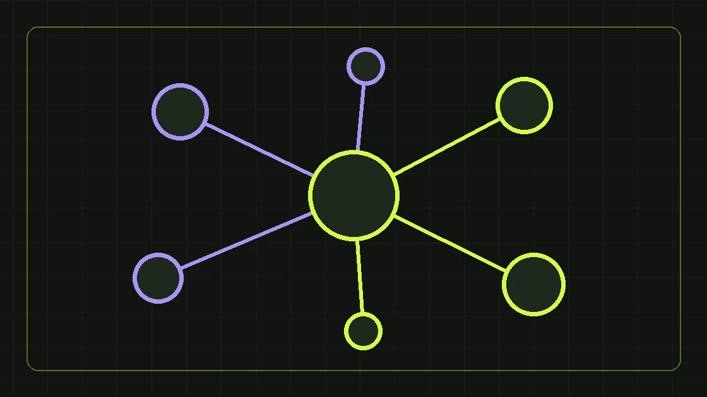

Объясняем работу с сигналами спроса, квалификацию и обязательные ограничения по данным.
Что подразумевают под DMP
В маркетинге DMP (data management platform) — система для работы с аудиторными сегментами и сигналами, полученными из определённых источников. На рынке термин «перехват лидов» используют для очень разных схем. Само посещение сайта конкурента не означает, что у вас есть право получить номер человека, установить его личность или позвонить ему.
Как выглядит корректный процесс
Сначала определяется бизнес-задача и целевая аудитория. Затем проверяются поставщики данных, происхождение сведений, правовые основания обработки и разрешённые способы коммуникации. Только после этого строятся рекламные и квалификационные сценарии. Любые обещания «все посетители конкурента с телефонами» требуют особенно тщательной проверки.
Правовая сторона
Перед покупкой баз и использованием идентификаторов проверьте применимость российского законодательства о персональных данных и рекламе, включая требования согласия. Наличие договора с поставщиком само по себе не доказывает правомерность происхождения контактов. Не используйте персональные данные без законного основания.
Как оценивать эффективность
Считать только количество найденных контактов бессмысленно. Важны доля валидных данных, разрешённый охват, количество отвеченных обращений, доля квалификации, стоимость целевого лида, конверсия в продажу и количество жалоб. Сравните эти показатели с альтернативными каналами.
Короткий ответ
Работа с данными может быть частью стратегии лидогенерации, но ключевыми остаются законность происхождения данных, уважительная коммуникация и реальная экономика продаж.
Почему «лид с сайта конкурента» — неоднозначное обещание
Под одним названием продавцы могут предлагать совершенно разные продукты: агрегированные интересы аудитории, размещение рекламы на похожие сегменты, обезличенные признаки спроса или списки контактных данных неизвестного происхождения. Эти продукты нельзя считать равнозначными. Рекламный сегмент без раскрытия личности человека позволяет показать сообщение определённой аудитории, но не даёт права назвать пользователя, узнать его номер или позвонить ему. Контакт с телефоном — уже другой вид данных и другой набор правовых вопросов. Прежде чем оценивать цену лида, попросите поставщика объяснить единицу поставки: показ, переход, добровольная заявка, контакт или квалифицированное обращение. От этой формулировки зависят законность обработки, возможность интеграции с CRM и коммерческая ценность результата.
DMP, CDP, CRM и лидогенерация: где границы
DMP обычно используют для управления аудиторными сегментами и рекламными активациями. CDP организует данные о клиентах и их взаимодействиях, если компания имеет законные основания их собирать и использовать. CRM хранит историю заявок, переговоров, сделок и ответственных сотрудников. Лидогенерация — бизнес-процесс привлечения интереса и получения обращений, а не название конкретной базы данных. Эти системы могут взаимодействовать, но задачи у них разные. Например, рекламный сегмент может помочь запустить кампанию на аудиторию с признаками потребности; человек сам переходит на посадочную и оставляет заявку; CRM фиксирует источник и дальнейший контакт. В таком сценарии источником персональных данных становится форма, а не «магическое определение номера» стороннего посетителя.
Какие сигналы спроса действительно полезны для B2B
Для B2B-компании важен не сам факт интереса к категории, а его контекст. Человек может изучать оборудование как сотрудник закупок, студент, конкурент, сервисный инженер или потенциальный партнёр. Поэтому анонимный сигнал не равен готовности купить. Уточняйте отрасль, размер компании, тип продукта, географию поставки, примерные сроки потребности и наличие полномочий для принятия решения. Часть этих признаков можно использовать для таргетирования без идентификации конкретного человека. Другая часть выявляется только при добровольном обращении и корректной квалификации. Чем дороже продукт и длиннее цикл сделки, тем значимее качество диалога и способность менеджера выяснить технические требования. Количество «найденных интересов» само по себе не заменяет такого диалога.
Проверка происхождения данных до заключения договора
Запросите у поставщика письменное описание источника, состава данных, цели первоначального сбора, допустимых способов использования и срока хранения. Уточните, кто считается оператором персональных данных и на каком основании информация передаётся следующему участнику. Если речь идёт о прямом контакте, спросите, как подтверждается предварительное согласие на соответствующий канал коммуникации и можно ли представить доказательства такого согласия. Договор с посредником не снимает эти вопросы автоматически. Отдельно проверьте возможность удаления данных, отзыв согласия, ведение списка исключений и процедуру реагирования на жалобы. Если поставщик отказывается раскрывать происхождение персональных контактов, не следует компенсировать неопределённость обещаниями высокой конверсии.
Российские требования к персональным данным и рекламе
При работе с российскими клиентами необходимо учитывать действующие нормы о персональных данных, рекламе и конкретном способе связи. Закон № 152-ФЗ требует правового основания для обработки и устанавливает специальные условия для прямых контактов в целях продвижения товаров и услуг. Для такого использования нужно проверить предварительное согласие и возможность доказать его наличие. Также должны быть понятны цели обработки, круг получателей, сроки хранения и порядок прекращения коммуникации. Правила зависят от фактической схемы, поэтому до запуска юридический специалист должен рассмотреть документы, согласия, интерфейсы и договоры. Эта статья объясняет управленческую проверку, но не заменяет индивидуальную правовую экспертизу. Использование технического способа получения контакта не делает его автоматически законным.
Корректный сценарий без передачи чужих телефонов
Начните с исследования спроса по сегментам и сформулируйте ценностное предложение: какая задача бизнеса решается, какие сроки и критерии выбора важны. Затем используйте допустимые инструменты рекламного таргетирования и отраслевые площадки, на которых аудитория может добровольно познакомиться с предложением. Ведите пользователя на страницу с условиями услуги, кейсами и понятным CTA. Форма должна сообщать, какие данные собираются и зачем, а CRM — фиксировать источник обращения и статус согласия там, где он требуется. После заявки менеджер уточняет потребность, не выдавая знание о человеке, которое компания не должна была получать. Такой процесс может дать меньше контактов на входе, зато позволяет оценивать реальные обращения и качество дальнейших продаж.
Как протестировать поставщика и не рисковать всей базой
Не начинайте с массовой загрузки персональных данных в CRM. Сначала зафиксируйте схему обработки и завершите юридическую проверку. Затем проведите ограниченный пилот по одному продукту или отрасли с понятным бюджетом и сроками. Сравните его с контрольными каналами: поисковой рекламой, отраслевыми каталогами, органическими заявками. Измеряйте не количество переданных записей, а стоимость квалифицированного обращения, время ответа менеджера, долю назначенных встреч и переходы в коммерческие предложения. Не игнорируйте негативные метрики — жалобы, отписки и запросы на удаление данных. Пилот считается полезным, если полученные показатели позволяют принять решение о масштабировании, даже когда гипотеза не подтвердилась.
Воронка оценки: от аудитории до сделки
На разных этапах нужны разные знаменатели. Если запускается реклама по сегментам, измеряйте показы, переходы и конверсию страницы в заявку. Если используется добровольно предоставленная база клиентов, отдельно фиксируйте число контактов с подходящими основаниями обработки, доставленные сообщения, ответы и квалификацию. На уровне CRM добавьте встречи, предложения, сделки и возвраты. CPL = расходы канала / число лидов, а CPQL = расходы / число квалифицированных лидов; последний показатель часто лучше отражает ценность для B2B. Если число квалифицированных заявок равно нулю, стоимость на один такой лид нельзя корректно рассчитывать. Не называйте контактом «лид», пока не согласован критерий интереса. И не сравнивайте цены без одинаковых правил квалификации.
Иллюстративный расчёт экономики
Предположим, что два канала получили одинаковый рекламный бюджет. Канал А принёс много заявок, но отдел продаж признал большую часть нецелевыми; канал Б принёс меньше обращений, зато квалифицированных оказалось больше. По обычному CPL первый может казаться победителем, по CPQL — проигрывать. Дальше стоит проверить, как отличаются доли коммерческих предложений и средняя маржинальность заказа. Это условный пример, а не результат действующего клиента Expert Team. Точные цифры для вашей компании можно получить только после согласования определения лида, интеграции с CRM и достаточного периода наблюдения. Для длительных сделок полезно сравнивать когорты по месяцу первого обращения: иначе закрытые продажи текущего месяца ошибочно привязывают к недавно купленному трафику.
Как организовать качество звонков и коммуникации
Даже законно собранные контакты можно испортить навязчивой обработкой. Подготовьте нейтральный сценарий, который позволяет человеку быстро понять, кто звонит, почему и как прекратить дальнейшие обращения. Фиксируйте отказ и соблюдайте его во всех подключённых системах. Не заставляйте менеджера обещать сведения о «просмотре сайта конкурента»: подобные формулировки способны вызвать недоверие и юридические вопросы. Для каждого квалификационного разговора определите необходимый минимум вопросов о продукте, сроках, бюджете и роли собеседника. Сохраняйте причины отказа, чтобы улучшать сегментацию и предложение, а не увеличивать число касаний без разбора. Контроль качества важнее механического количества набранных номеров.
Красные флаги у продавцов «перехвата»
Особенно внимательно отнеситесь к обещаниям «номера всех посетителей любого сайта», отсутствию документов о происхождении контактов, невозможности подтвердить основания обработки, оплате только за количество записей без критериев качества. Тревожными признаками являются запрет на аудит технической схемы, отсутствие процедуры исключений и давление с требованием запустить массовый обзвон немедленно. Ещё один риск — неочевидные договорные формулировки: «передача доступа к базе» вместо описания цели и полномочий участников. Требуйте демонстрацию измерений и прозрачного регламента. Нельзя оценивать безопасность только по тому, что у технологии есть красивое коммерческое название. Когда схема непонятна, разумнее не запускать её до проверки.
FAQ: перехват лидов и DMP
Можно ли определить телефон любого посетителя сайта конкурента? Само посещение чужого сайта не даёт такого права; заявления поставщика требуют технической и правовой проверки. DMP — это обязательно персональные данные? Нет, рекламные сегменты могут быть устроены по-разному; нужно смотреть фактическую идентифицируемость и операции. Законно ли обзванивать купленную базу? Без проверки происхождения и согласий ответить нельзя; не следует предполагать законность только из факта покупки. Как оценивать стоимость? По квалифицированным обращениям и дальнейшим этапам продаж. Когда ждать результата? Скорость зависит от продукта, спроса и цикла сделки, универсального срока нет. Чем заменить непрозрачную базу? Поисковой рекламой, отраслевым контентом и добровольными заявками.
Что делать бизнесу дальше
Сначала уточните продукт, который вам предлагают: рекламный сегмент, добровольную лид-форму или передачу персональных контактов. Затем проверьте правовые основания, аудит данных, воронку квалификации и конечную экономику. Если нужен системный поток обращений, начните со страницы лидогенерации для бизнеса и сравните альтернативы с настройкой рекламы. Главное — управляемая и законная воронка с понятными показателями, а не максимальное количество неизвестно как полученных телефонных номеров.
Нормативный ориентир для проверки данных
При оценке прямого контакта с потенциальным потребителем изучите актуальную редакцию статьи 15 Федерального закона № 152-ФЗ. Для конкретного сценария отдельно необходимо оценивать нормы о рекламе, договоры и технический процесс. Наличие формального документа не означает, что поставщик действительно имеет права на конкретные контакты; доказательная проверка должна касаться фактических операций и состава данных.
Этот материал находится на согласовании и не индексируется поисковиками, пока редактор не подтвердит факты и источники.
Сделаем план под вашу ситуацию
Обсудим задачи бизнеса и бюджет первых тестов.
Получить маркетинговый план ↗